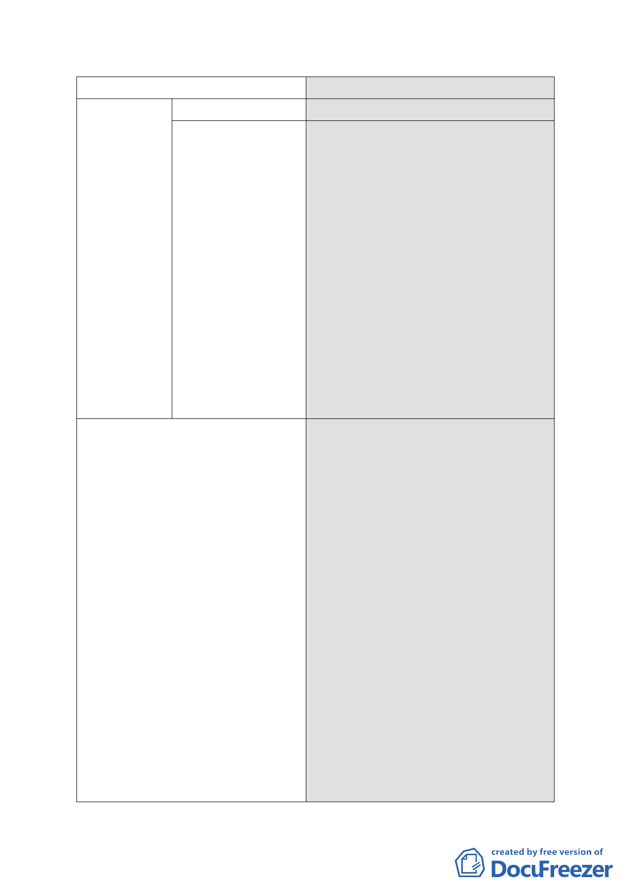

項目
●容積獎勵上限
6.都市設計管制要點
決議
項目不得重複計算。
容積獎勵上限一項，同意市府本次提
委員會之簡報說明，文字內容修正為
「1.法定容積與各種容積獎勵（含更
新容積獎勵）、容積移轉合計之總容
積樓地板面積仍不得超過各該建築
基地 2 倍之法定容積，並應優先申請
都市更新容積獎勵項目。2.經指定為
策略性再開發地區者，如無申請放寬
容積獎勵上限之需求，則應依本府 90
年 9 月 28 南港區都市計畫(主要計
畫)通盤檢討案，容積獎勵合計之容
積樓地板面積不得超過原法定容積
之 50%規定辦理，另前開 50%上限規
定不包含都市更新獎勵」。
1.最小建築基地規模，同意市府本次
提委員會之簡報說明：
（1）轉運站用地全區開發。
（2）B 區特定商業區（一）及 D 區東
側特定商業區（二）最小開發規
模為 3000 平方公尺。
（3）D 區西側特定商業區（二）最小
開發規模為 500 平方公尺。
2.公共開放空間系統，同意依市府本
次提委員會簡報說明之文字內容予
以修正（載明全區＜大範圍＞之整
體構想圖，同時標註本細部計畫範
圍內基地應依本要點及相關圖示規
定辦理，非屬本細部計畫範圍之基
地，後續擬定細部計畫，原則應以
本案之全區整體構想為依據）。
3.其餘項目同意依市府 100 年 9 月 16
日所送修正後計畫書內容辦理。
- 15 -